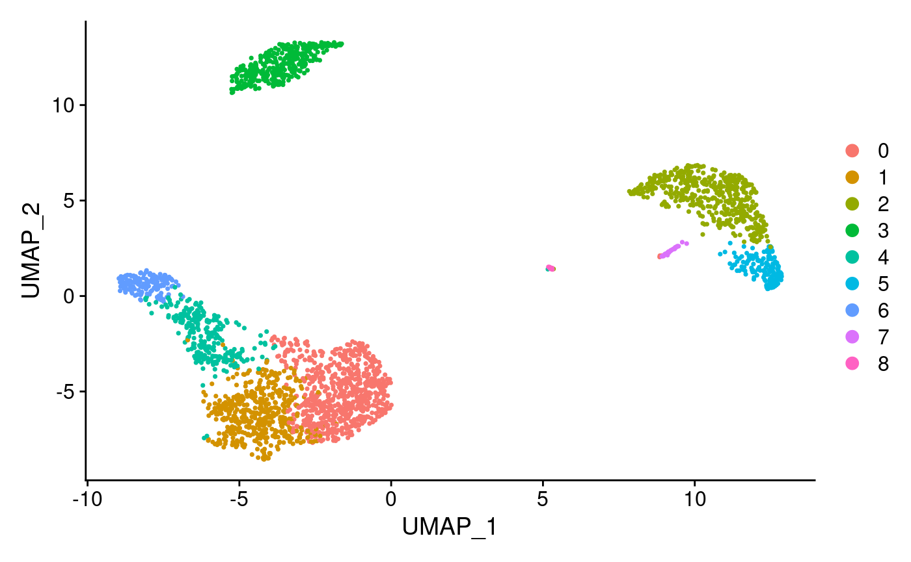
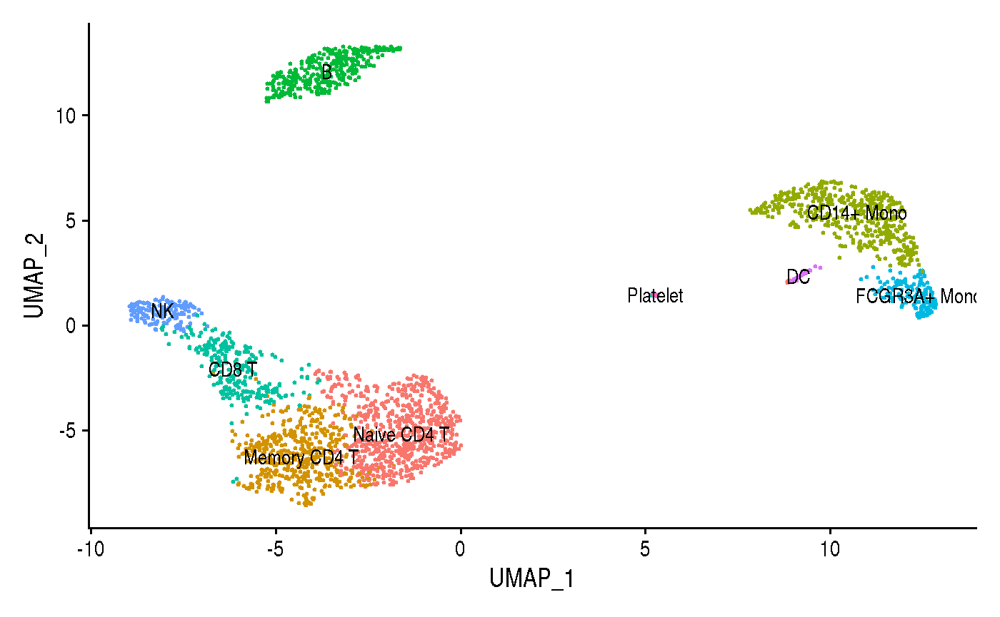
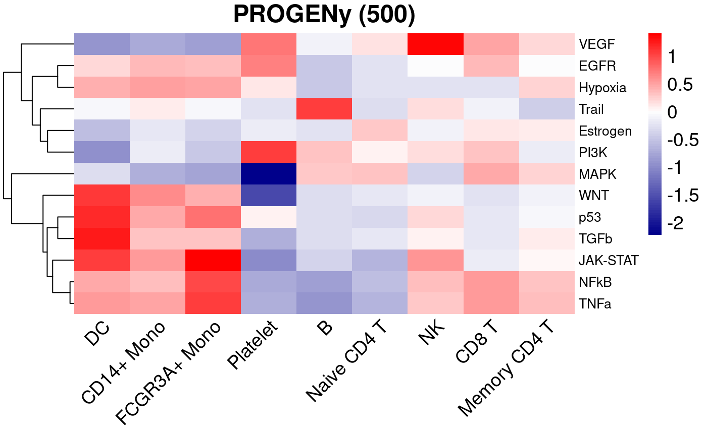

vignettes/ProgenySingleCell.Rmd
ProgenySingleCell.RmdAbstract
This vignette describes how to infer the activity of 14 relevant signaling pathways by running PROGENy on single-cell RNA-seq data.
Conventional pathway analysis methods rely on the gene expression of the pathway members. However, this approach overlook the effect of post-translational modifications and only captures very specific experimental conditions. To overcome these limitations, PROGENy (Pathway RespOnsive GENes) estimates the activity of relevant signaling pathways based on consensus gene signatures obtained from perturbation experiments, in other words, the footprint of the pathway on gene expression (Schubert et al. 2018 ,@dugourd2019).
PROGENy initially contained 11 pathways and was developed for the application to human transcriptomics data. It has been recently shown that PROGENy is also applicable to mouse data (Holland, Szalai, and Saez-Rodriguez 2019) and to single cell RNAseq data (Holland et al. 2019). In addition, they expanded human and mouse PROGENy to 14 pathways.
This vignette shows an example on how to apply PROGENy in a well known single-cell dataset. To analyse the data, we followed the standard procedures of the Seurat toolkit for single cell genomics (Stuart et al. 2019).
First of all, you need a current version of R (http://www.r-project.org). progeny is a freely available annotation package deposited on http://bioconductor.org/ and https://https://github.com/saezlab/progeny.
You can install it by running the following commands on an R console:
if (!requireNamespace("BiocManager", quietly = TRUE)) install.packages("BiocManager") BiocManager::install("progeny") ## To install the new version until it is submited to Bioconductor use: devtools::install_github("saezlab/progeny")
We also load here the packages required to run this script.
In the following paragraphs, we provide examples describing how to run PROGENy on a scRNA-seq dataset. In particular, we use the Seurat toolkit for single cell genomics (Stuart et al. 2019). For the sake of simplicity, we follow the example provided in the following Seurat vignette:
https://satijalab.org/seurat/v3.1/pbmc3k_tutorial.html
The dataset contains 2,700 Peripheral Blood Mononuclear Cells (PBMC) that were sequenced on the Illumina NextSeq 500. This dataset is freely available in 10X Genomics:
## Load the PBMC dataset pbmc.data <- Read10X(data.dir = "../data/pbmc3k/filtered_gene_bc_matrices/hg19/") ## Initialize the Seurat object with the raw (non-normalized data). pbmc <- CreateSeuratObject(counts = pbmc.data, project = "pbmc3k", min.cells = 3, min.features = 200)
We follow the standard pre-processing steps as described in the aforementioned Seurat vignette before going deeper into the data analysis. These steps carry out the selection and filtration of cells based on quality control metrics, the data normalization and scaling, and the detection of highly variable features (see https://satijalab.org/seurat/v3.1/pbmc3k_tutorial.html).
## Identification of mithocondrial genes pbmc[["percent.mt"]] <- PercentageFeatureSet(pbmc, pattern = "^MT-") ## Filtering cells following standard QC criteria. pbmc <- subset(pbmc, subset = nFeature_RNA > 200 & nFeature_RNA < 2500 & percent.mt < 5) ## Normalizing the data pbmc <- NormalizeData(pbmc, normalization.method = "LogNormalize", scale.factor = 10000) pbmc <- NormalizeData(pbmc) ## Identify the 2000 most highly variable genes pbmc <- FindVariableFeatures(pbmc, selection.method = "vst", nfeatures = 2000) ## In addition we scale the data all.genes <- rownames(pbmc) pbmc <- ScaleData(pbmc, features = all.genes)
One of the most relevant steps in scRNA-seq data analysis is clustering. Cells are grouped based on the similarity of their transcriptomic profiles. We first apply the Seurat v3 classical approach as described in their aforementioned vignette. We visualize the cell clusters using UMAP:
pbmc <- RunPCA(pbmc, features = VariableFeatures(object = pbmc), verbose = FALSE) pbmc <- FindNeighbors(pbmc, dims = 1:10, verbose = FALSE) pbmc <- FindClusters(pbmc, resolution = 0.5, verbose = FALSE) pbmc <- RunUMAP(pbmc, dims = 1:10, umap.method = 'uwot', metric='cosine')
DimPlot(pbmc, reduction = "umap")

Following again Seurat protocol, we next find the markers that help to identify and discriminate the different cell popualations present in the dataset under study.
## Finding differentially expressed features (cluster biomarkers) pbmc.markers <- FindAllMarkers(pbmc, only.pos = TRUE, min.pct = 0.25, logfc.threshold = 0.25, verbose = FALSE) ## Assigning cell type identity to clusters new.cluster.ids <- c("Naive CD4 T", "Memory CD4 T", "CD14+ Mono", "B", "CD8 T", "FCGR3A+ Mono", "NK", "DC", "Platelet") names(new.cluster.ids) <- levels(pbmc) pbmc <- RenameIdents(pbmc, new.cluster.ids) ## We create a data frame with the specification of the cells that belong to ## each cluster to match with the Progeny scores. CellsClusters <- data.frame(Cell = names(Idents(pbmc)), CellType = as.character(Idents(pbmc)), stringsAsFactors = FALSE)
We plot again the clusters along with their cell type labels

Finally, we compute PROGENy pathway activity scores on the scRNA-seq data, and we then characterice the different cell populations based on these scores.
## We compute the Progeny activity scores and add them to our Seurat object ## as a new assay called Progeny. pbmc <- progeny(pbmc, scale=FALSE, organism="Human", top=500, perm=1, return_assay = TRUE) ## We can now directly apply Seurat functions in our Progeny scores. ## For instance, we scale the pathway activity scores. pbmc <- Seurat::ScaleData(pbmc, assay = "progeny") ## We transform Progeny scores into a data frame to better handling the results progeny_scores_df <- as.data.frame(t(GetAssayData(pbmc, slot = "scale.data", assay = "progeny"))) %>% rownames_to_column("Cell") %>% gather(Pathway, Activity, -Cell) ## We match Progeny scores with the cell clusters. progeny_scores_df <- inner_join(progeny_scores_df, CellsClusters) ## We summarize the Progeny scores by cellpopulation summarized_progeny_scores <- progeny_scores_df %>% group_by(Pathway, CellType) %>% summarise(avg = mean(Activity), std = sd(Activity))
We plot the different pathway activities for the different cell populations
## We prepare the data for the plot summarized_progeny_scores_df <- summarized_progeny_scores %>% dplyr::select(-std) %>% spread(Pathway, avg) %>% data.frame(row.names = 1, check.names = FALSE, stringsAsFactors = FALSE)
paletteLength = 100 myColor = colorRampPalette(c("Darkblue", "white","red"))(paletteLength) progenyBreaks = c(seq(min(summarized_progeny_scores_df), 0, length.out=ceiling(paletteLength/2) + 1), seq(max(summarized_progeny_scores_df)/paletteLength, max(summarized_progeny_scores_df), length.out=floor(paletteLength/2))) progeny_hmap = pheatmap(t(summarized_progeny_scores_df[,-1]),fontsize=14, fontsize_row = 10, color=myColor, breaks = progenyBreaks, main = "PROGENy (500)", angle_col = 45, treeheight_col = 0, border_color = NA)

## R version 4.0.0 (2020-04-24)
## Platform: x86_64-pc-linux-gnu (64-bit)
## Running under: Ubuntu 19.10
##
## Matrix products: default
## BLAS: /usr/lib/x86_64-linux-gnu/openblas/libblas.so.3
## LAPACK: /usr/lib/x86_64-linux-gnu/libopenblasp-r0.3.7.so
##
## locale:
## [1] LC_CTYPE=en_GB.UTF-8 LC_NUMERIC=C
## [3] LC_TIME=en_GB.UTF-8 LC_COLLATE=en_GB.UTF-8
## [5] LC_MONETARY=en_GB.UTF-8 LC_MESSAGES=en_GB.UTF-8
## [7] LC_PAPER=en_GB.UTF-8 LC_NAME=C
## [9] LC_ADDRESS=C LC_TELEPHONE=C
## [11] LC_MEASUREMENT=en_GB.UTF-8 LC_IDENTIFICATION=C
##
## attached base packages:
## [1] stats graphics grDevices utils datasets methods base
##
## other attached packages:
## [1] tibble_3.0.1 pheatmap_1.0.12 readr_1.3.1 tidyr_1.1.0
## [5] ggplot2_3.3.1 Seurat_3.1.5 dplyr_1.0.0 progeny_1.11.1
## [9] BiocStyle_2.16.0
##
## loaded via a namespace (and not attached):
## [1] nlme_3.1-147 tsne_0.1-3 fs_1.4.1
## [4] RcppAnnoy_0.0.16 RColorBrewer_1.1-2 httr_1.4.1
## [7] rprojroot_1.3-2 sctransform_0.2.1 tools_4.0.0
## [10] backports_1.1.7 R6_2.4.1 irlba_2.3.3
## [13] KernSmooth_2.23-17 uwot_0.1.8 lazyeval_0.2.2
## [16] colorspace_1.4-1 withr_2.2.0 tidyselect_1.1.0
## [19] gridExtra_2.3 compiler_4.0.0 desc_1.2.0
## [22] plotly_4.9.2.1 labeling_0.3 bookdown_0.19
## [25] scales_1.1.1 lmtest_0.9-37 ggridges_0.5.2
## [28] pbapply_1.4-2 rappdirs_0.3.1 pkgdown_1.5.1
## [31] stringr_1.4.0 digest_0.6.25 rmarkdown_2.2
## [34] pkgconfig_2.0.3 htmltools_0.4.0 limma_3.44.1
## [37] htmlwidgets_1.5.1 rlang_0.4.6 rstudioapi_0.11
## [40] farver_2.0.3 generics_0.0.2 zoo_1.8-8
## [43] jsonlite_1.6.1 ica_1.0-2 magrittr_1.5
## [46] patchwork_1.0.0 Matrix_1.2-18 Rcpp_1.0.4.6
## [49] munsell_0.5.0 ape_5.4 reticulate_1.16
## [52] lifecycle_0.2.0 stringi_1.4.6 yaml_2.2.1
## [55] MASS_7.3-51.6 Rtsne_0.15 plyr_1.8.6
## [58] grid_4.0.0 parallel_4.0.0 listenv_0.8.0
## [61] ggrepel_0.8.2 crayon_1.3.4 lattice_0.20-41
## [64] cowplot_1.0.0 splines_4.0.0 hms_0.5.3
## [67] knitr_1.28 pillar_1.4.4 igraph_1.2.5
## [70] future.apply_1.5.0 reshape2_1.4.4 codetools_0.2-16
## [73] leiden_0.3.3 glue_1.4.1 evaluate_0.14
## [76] data.table_1.12.8 BiocManager_1.30.10 vctrs_0.3.1
## [79] png_0.1-7 gtable_0.3.0 RANN_2.6.1
## [82] purrr_0.3.4 future_1.17.0 assertthat_0.2.1
## [85] xfun_0.14 rsvd_1.0.3 RSpectra_0.16-0
## [88] survival_3.1-12 viridisLite_0.3.0 memoise_1.1.0
## [91] cluster_2.1.0 globals_0.12.5 fitdistrplus_1.1-1
## [94] ellipsis_0.3.1 ROCR_1.0-11Dugourd, Aurelien, and Julio Saez-Rodriguez. 2019. “Footprint-Based Functional Analysis of Multiomic Data.” Current Opinion in Systems Biology 15: 82–90. https://doi.org/10.1016/j.coisb.2019.04.002.
Holland, Christian H., Bence Szalai, and Julio Saez-Rodriguez. 2019. “Transfer of Regulatory Knowledge from Human to Mouse for Functional Genomics Analysis.” Biochimica et Biophysica Acta (BBA) - Gene Regulatory Mechanisms, 194431. https://doi.org/https://doi.org/10.1016/j.bbagrm.2019.194431.
Holland, Christian H., Jovan Tanevski, Jan Gleixner, Manu P. Kumar, Elisabetta Mereu, Javier Perales-Patón, Brian A. Joughin, et al. 2019. “Robustness and Applicability of Functional Genomics Tools on scRNA-Seq Data.” bioRxiv. https://doi.org/10.1101/753319.
Schubert, Michael, Bertram Klinger, Martina Klünemann, Anja Sieber, Florian Uhlitz, Sascha Sauer, Mathew J. Garnett, Nils Blüthgen, and Julio Saez-Rodriguez. 2018. “Perturbation-Response Genes Reveal Signaling Footprints in Cancer Gene Expression.” Nature Communications 9 (1): 20. https://doi.org/10.1038/s41467-017-02391-6.
Stuart, Tim, Andrew Butler, Paul Hoffman, Christoph Hafemeister, Efthymia Papalexi, William M. III Mauck, Yuhan Hao, Marlon Stoeckius, Peter Smibert, and Rahul Satija. 2019. “Comprehensive Integration of Single-Cell Data.” Cell 177 (7): 1888–1902.e21. https://doi.org/10.1016/j.cell.2019.05.031.